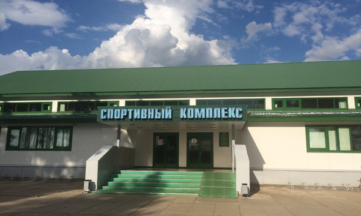
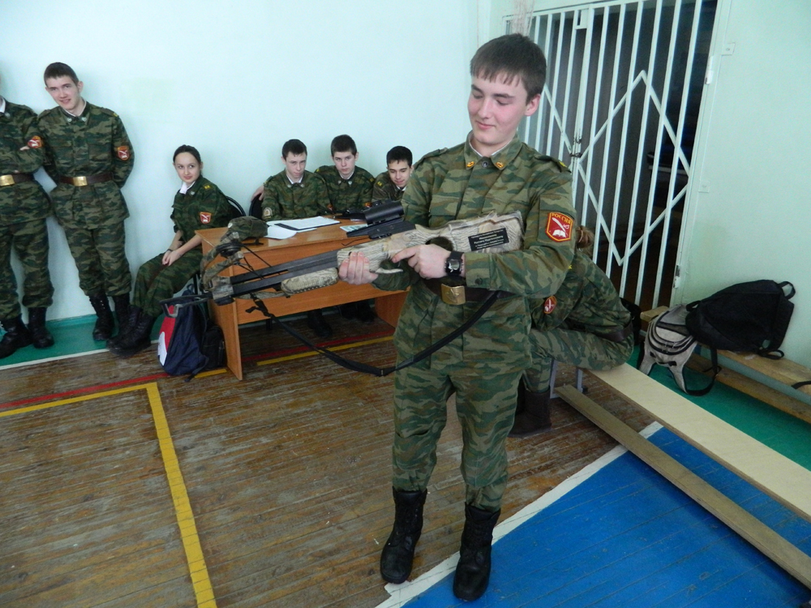
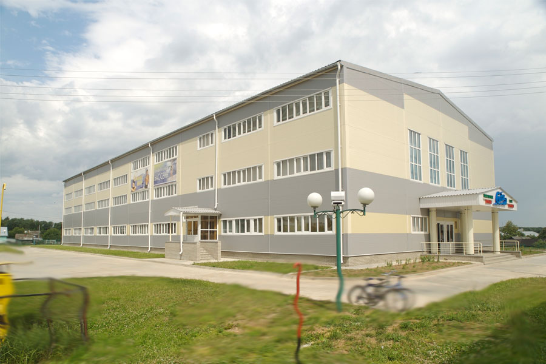

Оглавление
Спорт помогает человеку быть в хорошей физической форме, а кроме того он воспитывает характер и силу воли. Занятия спортом способствуют укреплению здоровья. Даже простая зарядка утром под любимую музыку заряжает энергией на весь день.
В Сабинском районе РТ население активно занимается спортом. В районе есть все условия для занятия спортом. Здесь функционирует 121 спортивных объект. 10 тыс. 992 человека, включая воспитанников детсадов и пенсионеров, регулярно занимаются спортом.
КУДА МОЖНО ПОЙТИ?
Ледовый дворец "Нарат"
Одним из главных спортивных объектов Сабинского района является ледовый дворец «Нарат». Он начал функционировать 24 декабря 2004 года. Сюда приезжают дети из 10 населенных пунктов района. В настоящее время здесь занимаются 473 человека. 270 из них - воспитанники детских садов, которые учатся кататься на коньках, 176 ребят занимаются хоккеем, 27 – фигурным катанием. Вечером сюда приходят тренироваться взрослые мужские команды. Таким образом, «Нарат» не бывает пустым: он функционирует с 8.00 до 23.30.

Стрельба из лука
Популярен в Сабинском районе и такой вид спорта, как стрельба из лука. Им ребята занимаются в Сабинской кадетской школе-интернате. По словам директора школы Ильнара Гайнуллина, этим видом спорта занимается половина школы – 100 детей. В этом году появилась возможность стрелять из арбалета. В ней тренируются 25 кадетов. Здесь же проходят тренировки по флорболу. В настоящее время им занимаются 70 детей, 30 из них ездят соревноваться. В районных состязаниях третий год подряд женская команда занимает первые места.

Плавательный бассейн "Саба"
Другой важный спортивный объект – плавательный бассейн «Саба». По словам директора комплекса Рифата Хисамова, «Саба» открыт в 2008 году. Комплекс современен, здесь можно позаниматься в тренажерном зале, поплавать в бассейне. Второй бассейн имеет малые размеры, он предназначен для детей от 6 лет. Воспитанники детского сада и школьники 1 и 2 классов посещают комплекс бесплатно. В течение дня сюда приходят заниматься 300-350 человек. Именно в этом комплексе работники госучреждений сдают нормы по плаванию. По соседству расположен еще один спортивный комплекс, название которому не дали. Он функционирует с 2002 года. За день его посещают 60-70 человек. Здесь оборудованы залы для бокса, художественной гимнастики, каратэ, дзюдо, волейбола, баскетбола.
